MINHOCÁRIO AUTOMATIZADO
Um dos insumos necessários para os cultivos é a fertilização por meio de adubos. Os agricultores compram compostos de fezes de animais (esterco produzido à base de fezes de aves, no caso) para este processo e queixam-se do preço e da logística para a compra, além de o esterco adotado ser um possível vetor de agentes patogênicos ao homem se não compostado de maneira adequada. Diante deste cenário de inviabilidade financeira e de riscos à saúde, os assentados estão partindo para um modo mais sustentável para fertilização do solo, a compostagem orgânica.
Em decorrência destes fatores, surgiu a ideia de criar um dispositivo integrado que monitore estas condições para fins de controle e otimização do processo e do tempo necessário para a produção do húmus. O monitoramento possibilitará que o próprio sistema atue quando necessário, autorregulando-se e fazendo com que os parâmetros fiquem dentro da margem ótima de funcionamento.As visitas exploratórias desta frente de trabalho ocorreram para a verificação dos problemas dos agricultores e agricultoras interessados no processo de compostagem orgânico. Dentre as dificuldades, notou-se o manuseio inadequado da primeira tentativa na unidade de referência em 2018 e também de outras formas de adubação convencionais.
Para que a compostagem aconteça de forma eficiente alguns fatores estão ligados diretamente às condições em que os compostos orgânicos são expostos. Existem parâmetros estabelecidos que mantém a composteira em seu desenvolvimento ideal e cada tipo de material usado para compostagem deve ter um arranjo entre temperatura, umidade, Ph, compactação e aeração. Esses parâmetros são medidos de maneira bem rudimentar em que pouco se utiliza dispositivos eletrônicos para a medição.
A partir disso, a frente de trabalho em Eletrônica iniciou o desenho da intervenção com foco em um processo de compostagem que otimize tempo, eficácia e praticidade na aeração dos compostos orgânicos responsáveis pelas variáveis. Caso utilize o dispositivo no modo local, ele receberá um alerta das variáveis que ultrapassarem os valores parametrizados, porém, o revolvimento não será realizado automaticamente, cabendo ao usuário executar manualmente as ações. Luzes de sinalização também são parte do circuito para determinar os níveis críticos dos parâmetros a fim de facilitar a compreensão e manuseio do dispositivo pelo público alvo.
Saber Mais...
Fotos do MINHOCÁRIO AUTOMATIZADO


 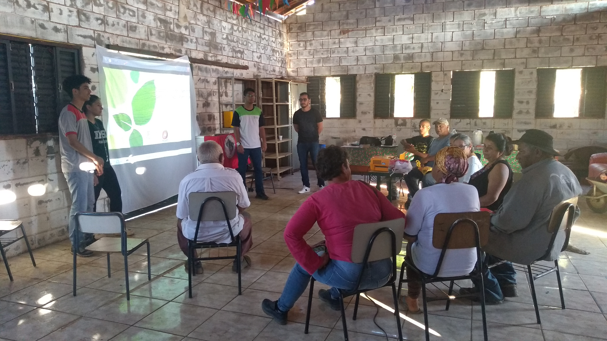
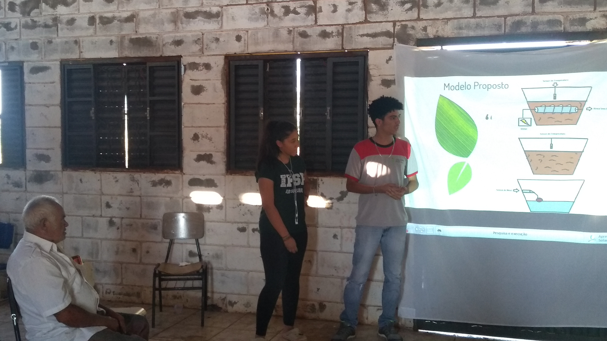
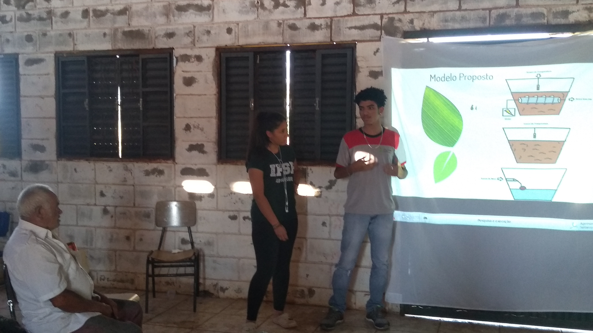
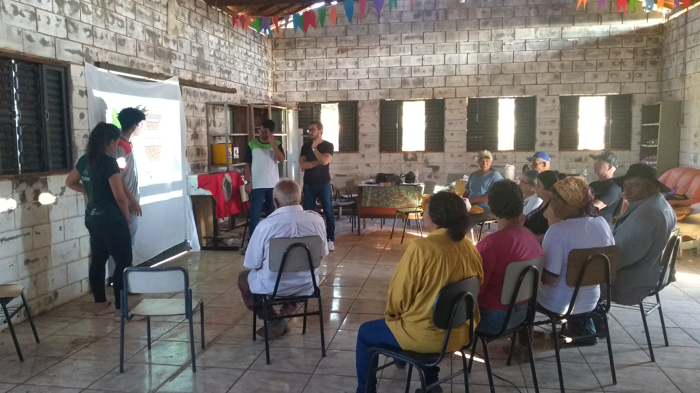
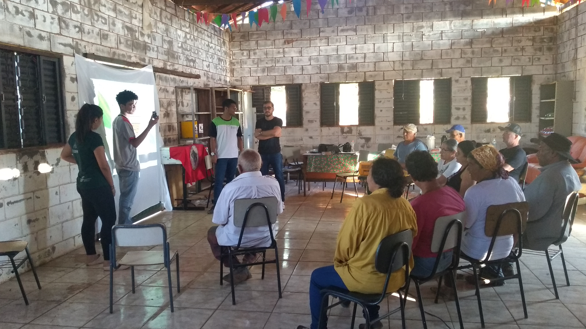
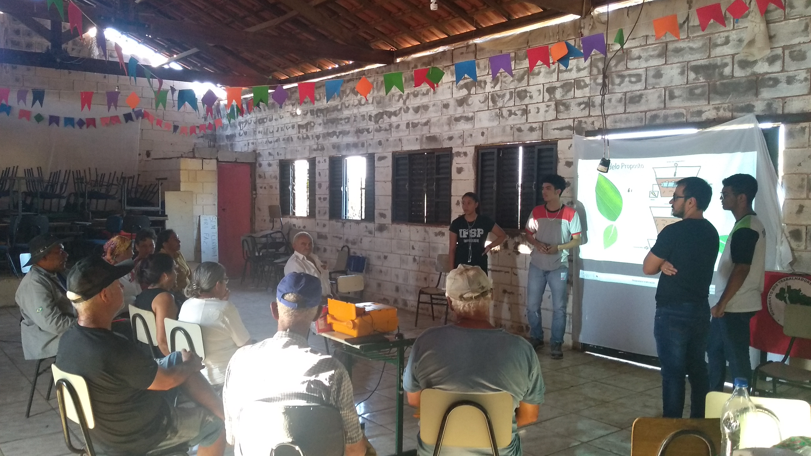
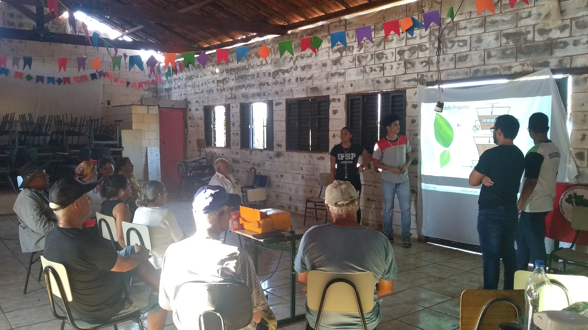
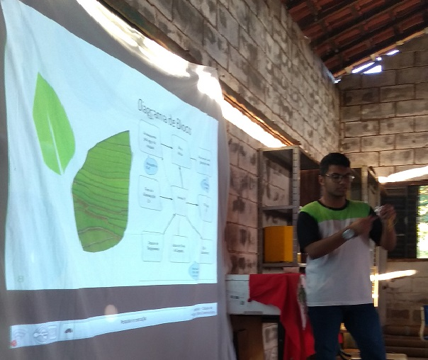
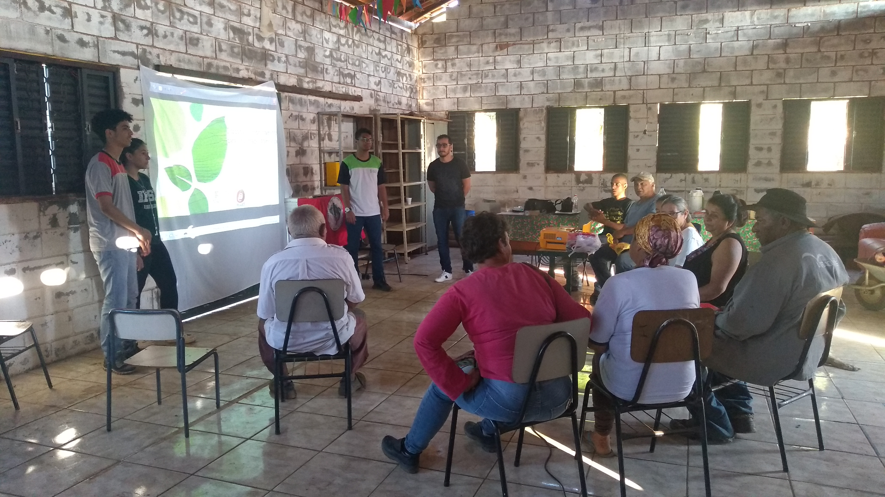
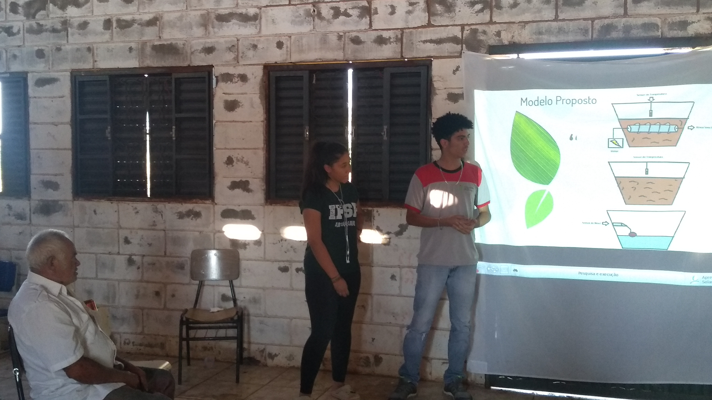
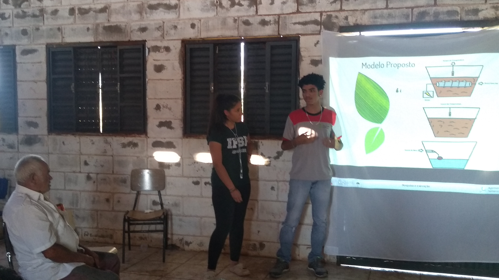
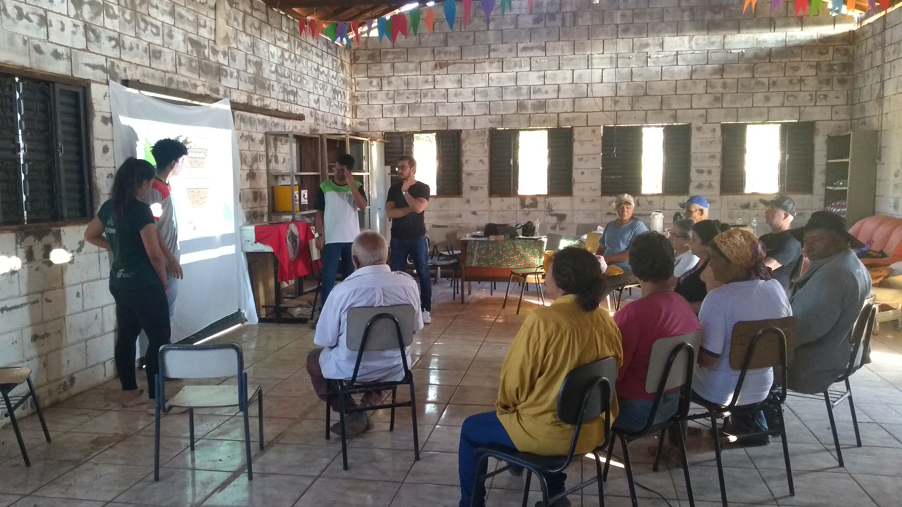
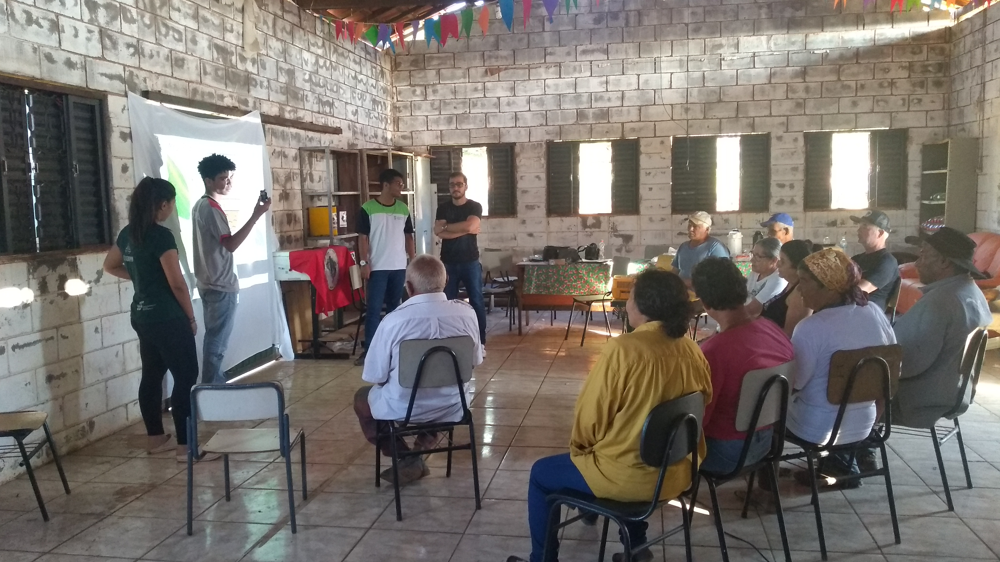
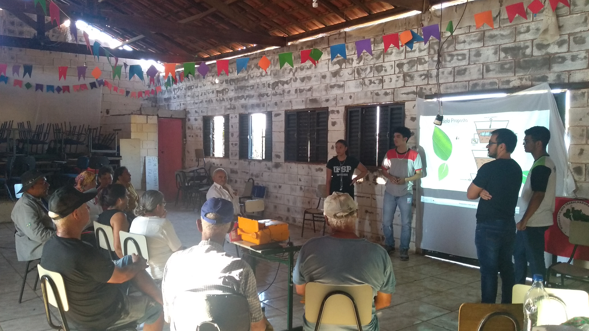
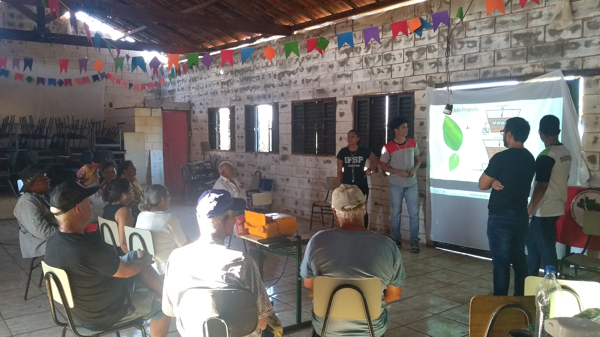
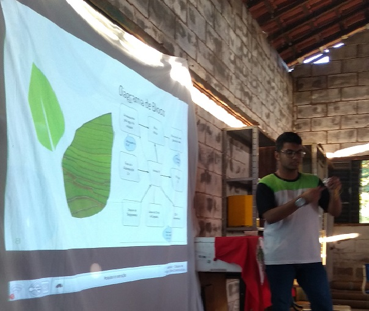